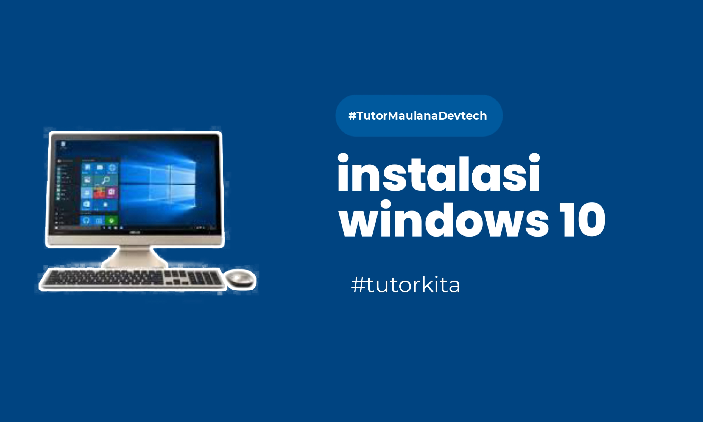

25 Mei 2024
Tutorial Install Windows 10 dari Download sampai Instalasi

Deskripsi
Windows 10 adalah sistem operasi terbaru dari Microsoft yang dirancang untuk memberikan pengalaman pengguna yang lebih baik dan lebih aman.
Union adalah tipe data yang berisi sekumpulan variabel yang dibungkus jadi satu dan memiliki alamat memori yang sama. Untuk menjawab ini, kita akan pakai studi kasus misalnya membuat game dan menyimpan data senjata pemain.
Tujuan
Tutorial ini bertujuan untuk membantu pengguna dalam menginstall Windows 10 dengan mudah dan benar.
Langkah-langkah Installasi
- Persiapkan media installasi (USB bootable)
- Boot dari USB dan ikuti petunjuk di layar
- Selesaikan proses installasi dan konfigurasi awal

Kesimpulan
Dengan mengikuti tutorial ini, Anda dapat menginstall Windows 10 dengan mudah dan cepat.